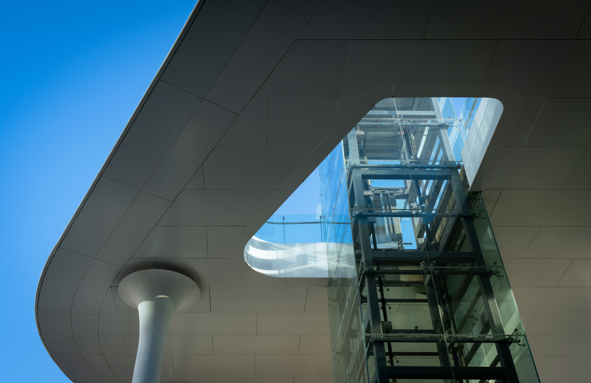

승강기는 사용 기간이 길어지면서 부품 마모로 성능이 저하될 수 있습니다.유지보수에도 고장이 잦거나 운행 중단이 길어진다면, 정밀 진단을 통해 교체 필요성을 확인해 보세요.

마모되거나 노후한 부품을 교체해 반복 고장을 줄이고안정적인 운행을 돕습니다.
제어 시스템을 교체해 출발과 정지를 부드럽게 하고전력 효율 개선을 기대할 수 있습니다.
승강기 내외부 마감과 조작부를 개선해더 쾌적하고 편리한 이용 환경을 만듭니다.